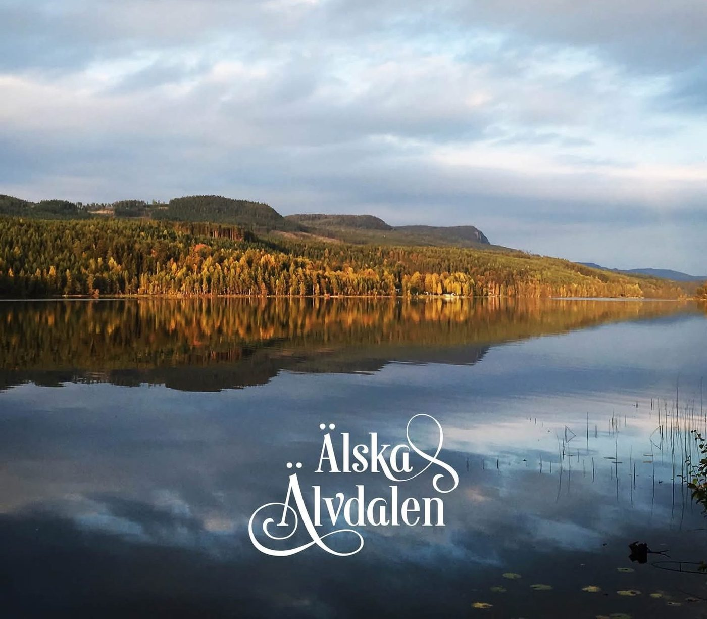
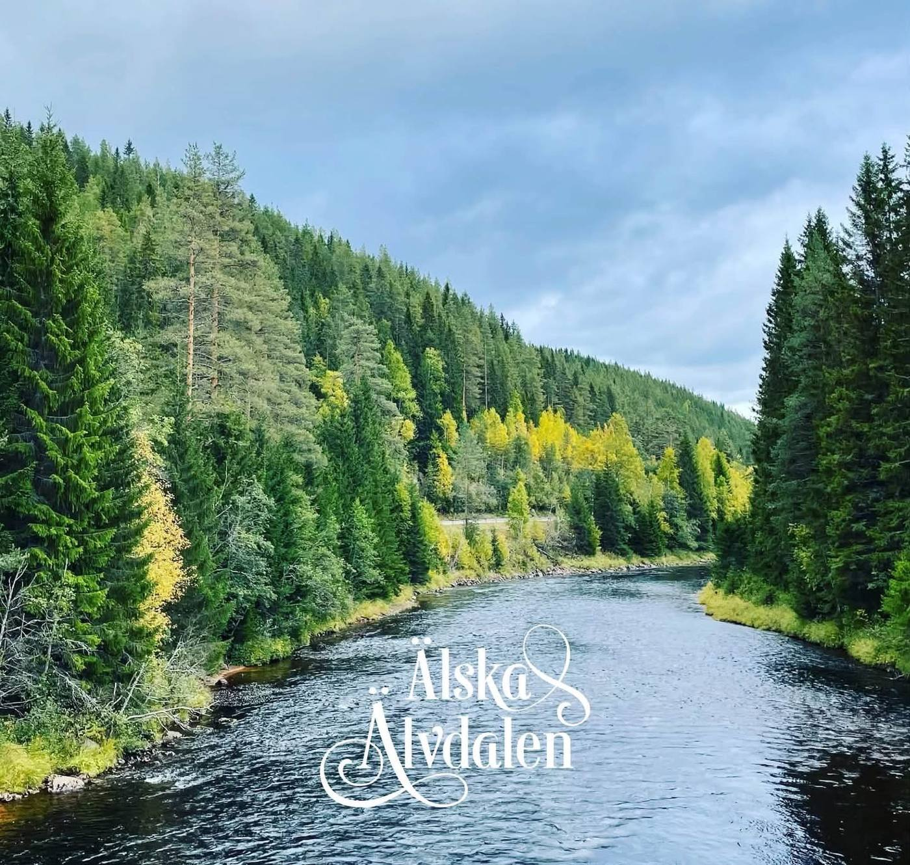
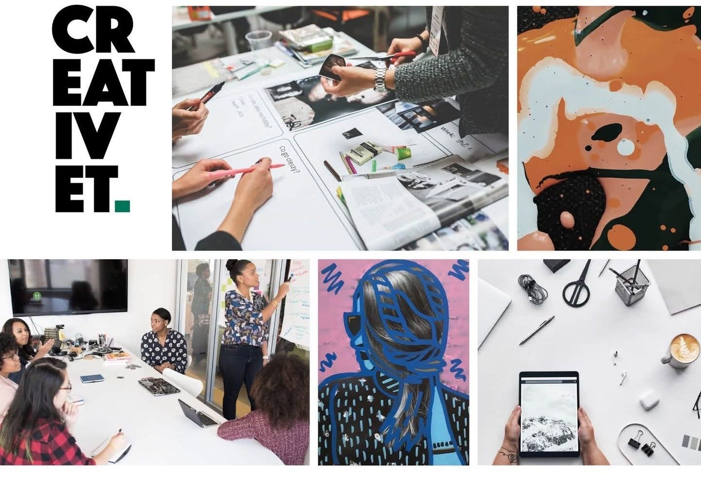

Om Älska Älvdalen
Nu föds Älska Älvdalen som en ideell förening.

Vår vision
Vi vill göra Älvdalen mer levande — att fler ska trivas, besöka och flytta till Älvdalen.
Vi vill vara en motor för utvecklingen i byn, där vi tillsammans med andra föreningar, företag, ideella krafter och Älvdalens Kommun ska se till att Älvdalen är en attraktiv plats.

Idéråd
Vi kommer att skapa ett idéråd, där vi ses en gång per år för att prata om vilka projekt och idéer vi vill driva kommande år. Alla som vill får vara med.
Sen skapas arbetsgrupper för att jobba med olika frågor. Det kan vara allt från Älvpromenad till att skapa mötesplatser.
Vinter & sommarmagasin
Till vintern lanserar vi vårt första magasin — en uppföljare till tidigare Happy Älvdalen. Det blir fyllt med reportage, tips och guider, och vi hoppas att du vill vara en del av det!
Vi tar gärna emot artikelförslag och välkomnar företag och föreningar som vill annonsera. Tillsammans bidrar vi till ett ännu mer levande Älvdalen!
Skicka artikelförslag
Co-work & kreativ hub
Välkommen till Creativet
Tack vare Älvdalens Besparingsskog kan vi nu öppna CO-work & en kreativ hub. Det blir i Blå huset på Dalgatan 100.
Du är välkommen att plugga, jobba, ha möten, event eller workshops här — helt gratis!
Kontakt
Kontakta oss